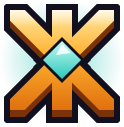
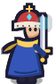
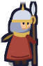
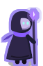
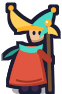
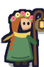
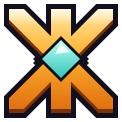

на рубеж

Подарок новичку300 монет и окрас «Знахарка»

Приглашение (Р63: сообщение через `savePreparedInlineMessage` → `shareMessage`): облик пригласившего, его имя, подарок новичку. Друг видит не «ещё одну игру», а знакомого человека в красивом облике. Ссылка кнопки несёт реферальную метку.

Рекорд и итог забега — «Поделиться» на экране итогов: время, очки и место, стиль, разбор по осям полосами и облик. Друг видит вызов и сразу кнопку «Попробовать» — лучший органический вход.

Карточка игрока (Р48: «Поделиться» из карточки): облик целиком, имя, знак, уровень, лучший забег, место, боссы. Престижный облик подписан — откуда он, это реклама престижа.
рамка «Золото» · 300 самоцветов · знак «Топ-10% · сезон 4»
Итог сезона: дивизион и место крупно, аватар в рамке дивизиона, награды. Отправляется тем, кто сыграл в сезоне; кнопка ведёт сразу к забору — повод вернуться в день сброса.


Тебя обогнали — самое сильное напоминание: не «зайди в игру», а «друг тебя обошёл». Только друзья и чат, не чаще раза в сутки, по выбору игрока (§3.10 docs/35). Рядом — «Награда дня ждёт: день 5 — 150 монет» (горсть монет из игры) и «Колесо снова крутится».

Сводка за 22 октябряMSK · продЧат админов: сводка дня — четыре числа с изменением к прошлой неделе, тренд за 14 дней, плашки «что заметить». Тёмная, плотная, без героя — это рабочий инструмент, но в том же языке: руна, палитра, шрифт. Тревога (ошибки, платежи) — та же раскладка с красной полосой слева и одним главным числом.